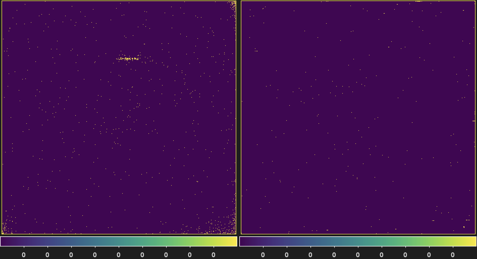

Calibration Products
Several calibration reference files are required by the SCALES Data Reduction Pipeline to char- acterize detector behavior, correct instrumental effects, and enable spectral extraction. These calibration products are generated from dedicated calibration observations and detector charac- terization datasets acquired during instrument commissioning and routine calibration campaigns. Once generated, most of the calibration files can be reused for science processing provided that the detector operating conditions, readout configuration, and instrument setup remain unchanged. The calibration framework consists of both detector-level calibration products and IFS-specific calibration products. Detector-level calibration files are used to characterize and correct detector artifacts such as bad pixels, non-linearity, read noise, gain variations, and persistence. IFS-specific calibration files describe the mapping between detector pixels and the reconstructed spectral cube and are required for spectral extraction.
All the primitive files are exist in:
/SCALES-DRP/scalesdrp/primitives
All the calibration files are exist in:
/SCALES-DRP/scalesdrp/calib
Linearity Coefficient Generation
Generates per-pixel detector non-linearity calibration coefficients from uniformly illuminated flat-field ramps.
This primitive derives the detector non-linearity correction coefficients used by the linearity correction step (see Linearity Correction). Each detector pixel is calibrated independently using a high signal-to-noise flat-field ramp that spans the detector’s linear, non-linear, and saturation regimes.
The routine analyzes each pixel ramp to identify the usable pre-saturation region, constructs an ideal linear reference response, detects the onset of non-linearity, and fits a piecewise polynomial model that maps the measured detector signal to its corresponding linearized value.
Behaviour
Validates the input ramp and removes unusable samples before fitting.
Optionally excludes pixels flagged in the supplied bad pixel mask.
Ignores the first few detector reads to avoid reset transients.
Rejects pixels with insufficient dynamic range, too few valid reads, or unstable detector behaviour.
Detects the onset of detector saturation using either:
a fixed saturation threshold; or
the measured reduction in the ramp derivative.
Constructs an anchored linear reference model from the pre-saturation portion of the ramp.
Identifies the transition between the linear and non-linear detector response.
Fits two polynomial correction functions:
a low-signal polynomial (
COEFFS1);a high-signal polynomial (
COEFFS2).
Enforces continuity between the two polynomial segments at the transition point.
Validates the correction by ensuring that it:
remains monotonic;
does not introduce non-physical behaviour;
improves the linearity of the detector response.
Records the reason for any rejected or fallback calibration using a per-pixel data quality (DQ) bitmask.
Calibration Products
The generated calibration reference file contains:
COEFFS1— low-signal polynomial coefficients.COEFFS2— high-signal polynomial coefficients.CUTOFF_M— measured DN separating the low- and high-signal correction regions.CUTOFF_L— corresponding linearized DN transition value.SATURATION— estimated detector saturation level.SAT_INDEX— read index at which saturation begins.SLOPEandINTERCEPT— anchored baseline linear model parameters.BREAK_INDEX— detected onset of detector non-linearity.GOODPIX— pixels with successful linearity calibration.DQ— per-pixel data quality flags describing calibration failures or fallback conditions.BPM_INPUT— the input bad pixel mask used during coefficient generation.
Output
The primitive produces a FITS calibration reference file containing the polynomial coefficients, detector response parameters, quality flags, and auxiliary calibration products required by the Linearity Correction primitive.
The related codes can be found here:
/SCALES-DRP/scalesdrp/Primitives/linearity.py
Data Quality Flags (DQ Flags)
Records the quality and validity of the per-pixel linearity calibration.
During the generation of the linearity calibration coefficients (Linearity Coefficient Generation), the pipeline creates a per-pixel data quality (DQ) map. Each pixel is assigned one or more bitmask flags describing the outcome of the calibration process. These flags are stored in the output calibration FITS file and are used by subsequent processing steps to identify pixels with unreliable or unavailable linearity corrections.
The DQ map includes flags describing:
Input data integrity
Pixel masked in the input bad pixel mask.
Insufficient finite samples.
Insufficient dynamic range.
Too few valid reads for fitting.
Detector behaviour
Unstable negative jumps.
No saturation detected.
Invalid baseline linear fit.
No measurable non-linearity transition.
Polynomial fitting
Low-order polynomial fit failure.
High-order polynomial fit failure.
Fallback to a single polynomial fit.
Physical validation
Non-monotonic correction.
Discontinuous low/high transition.
Excessive fit residuals.
Correction failed physical validation.
In addition to the DQ map, the calibration file also contains a GOODPIX extension identifying pixels for which a valid linearity calibration was successfully generated.
The related codes can be found here:
/SCALES-DRP/scalesdrp/Primitives/linearity.py
Creating Master Bad Pixel Mask
Identifies and classifies detector bad pixels from calibration image stacks.
This primitive generates the master bad pixel mask (BPM) used throughout the pipeline to identify defective detector pixels. The BPM is constructed from stacks of calibrated dark or flat-field slope images, depending on the selected operating mode. In addition to producing a binary bad pixel mask, the routine classifies each bad pixel according to its detector behaviour and records the results in a bitmask-based data quality (DQ) map.
Dark image stacks are used to identify abnormal dark-current behaviour, while flat-field stacks are used to identify abnormal detector response. The resulting master BPM is used during science, calibration, and quicklook processing.
Behaviour
Processes either dark or flat-field calibration image stacks.
Identifies detector reference pixels and optionally excludes them from statistical calculations.
Flags pixels containing non-finite values.
Detects temporally unstable pixels from frame-to-frame variations after removing common-mode detector structure.
For dark stacks:
identifies hot pixels;
identifies cold pixels.
For flat-field stacks:
identifies low-response (low-QE) pixels;
identifies abnormally high-response (open-like) pixels.
Detects persistent local spatial outliers relative to neighbouring pixels.
Identifies connected clusters of defective pixels.
Combines all detected defect classes into a single master bad pixel mask.
Data Quality (DQ) Flags
The output DQ map records the reason each pixel was classified as bad. The supported categories include:
NONFINITE— non-finite calibration values.UNSTABLE— excessive temporal variation.HOT— abnormally high dark current.COLD— abnormally low dark current.LOW_QE— reduced flat-field response.HIGH_RESPONSE— abnormally high flat-field response.SPATIAL_OUTLIER— persistent local spatial anomaly.CLUSTER— member of a connected bad-pixel cluster.REFERENCE_PIXEL— detector reference pixel.
Multiple DQ flags may be assigned to a single pixel.
Output
The primitive returns:
final_bpm— boolean master bad pixel mask.dq_map— bitmask-based data quality map.masks— individual masks for each bad pixel category.products— diagnostic images used to evaluate the generated bad pixel mask, including temporal noise maps, median calibration images, normalized flat responses, spatial outlier maps, and dark-level images.
The related codes can be found here:
/SCALES-DRP/scalesdrp/Primitives/bpm_correction.py
{kind=link}

bad pixel mask for imaging detector (right), and the IFS detector (left).
Read Noise Map
Provides a per-pixel detector read noise map for ramp fitting.
The read noise map is generated from a series of bias exposures after bad pixel correction and removal of the detector DC offset. Multiple bias frames are combined to estimate the read noise of each detector pixel, producing a two-dimensional calibration map used during ramp fitting.
The read noise map provides the per-pixel read noise required by the ramp fitting algorithm to correctly weight detector samples and estimate the count rate and its associated uncertainty.
The read noise maps are not regenerated as part of the routine daily calibrations. Instead, they are updated periodically following detector performance evaluations to account for any long-term changes in detector characteristics.
The current read noise reference files for both the imager and IFS detectors are distributed with the pipeline and are used automatically during ramp fitting and spectral extraction.
Rectification Matrix
Generates the detector-to-lenslet mapping required for IFS spectral extraction.
The rectification matrix is generated from a sequence of monochromatic calibration exposures spanning the wavelength range of each IFS observing mode. These calibration images measure the detector response of every lenslet spectrum as a function of wavelength and form the basis for both the optimal and χ² spectral extraction methods.
For each observing mode, the pipeline identifies and tracks monochromatic lenslet spots across wavelength, registers them to the physical lenslet array, and constructs sparse rectification matrices describing the detector response. These calibration products are generated only when no valid rectification matrix already exists or when the instrument geometry has changed. Otherwise, the previously generated calibration products are loaded directly.
Behaviour
Identifies monochromatic lenslet spots in each calibration exposure.
Tracks individual lenslet spots across wavelength to reconstruct spectral traces.
Removes duplicate or incomplete trace detections.
Registers detector traces to the physical lenslet array.
Generates a positional calibration array (
posarr) describing the detector location and extraction region of every lenslet at every wavelength.Constructs sparse rectification matrices from the measured monochromatic point spread functions (PSFs).
Saves the calibration products for reuse, avoiding regeneration during routine pipeline execution.
Calibration Products
The rectification calibration consists of:
posarr— positional calibration array containing the detector coordinates, extraction regions, and spot intensities for every wavelength and lenslet.QL_rectmat— sparse rectification matrix used by the quicklook and optimal extraction pipeline to map detector pixels into extracted spectral flux.C2_rectmat— sparse forward-model rectification matrix used by the science-grade χ² extraction to model detector images from spectral flux.
Output
The generated calibration products are stored for subsequent pipeline processing and are reused until a new detector geometry or calibration sequence requires regeneration.
Master Calibration Frame Generation
Combines multiple calibration exposures into high signal-to-noise master calibration frames.
This primitive combines repeated calibration exposures into a single master calibration frame for use throughout the pipeline. It supports the generation of master bias, dark, detector flat, lenslet flat, and other detector calibration products by combining individual calibrated slope images while rejecting transient artifacts and propagating uncertainties.
Input calibration frames may be supplied either as a three-dimensional image stack or as a list of two-dimensional images. When available, per-frame uncertainty images are used for inverse-variance weighted combination.
Behaviour
Accepts a stack of calibration images with optional uncertainty images.
Optionally scales individual frames prior to combination (e.g., for exposure-time or illumination normalization).
Excludes non-finite pixels and invalid uncertainty values.
Performs iterative sigma-clipping to reject transient artifacts and outliers.
Supports three combination methods:
ivw— inverse-variance weighted mean;mean— arithmetic mean;median— median combination.
Propagates uncertainties using the selected combination method.
Marks output pixels with insufficient valid input samples as invalid.
Optionally returns the final inlier mask identifying which input frames contributed to each output pixel.
Output
The primitive returns:
a master calibration image;
an associated uncertainty image;
optionally, the final inlier mask used during sigma clipping.
The related codes can be found here:
/SCALES-DRP/scalesdrp/Primitives/scales_basic.py